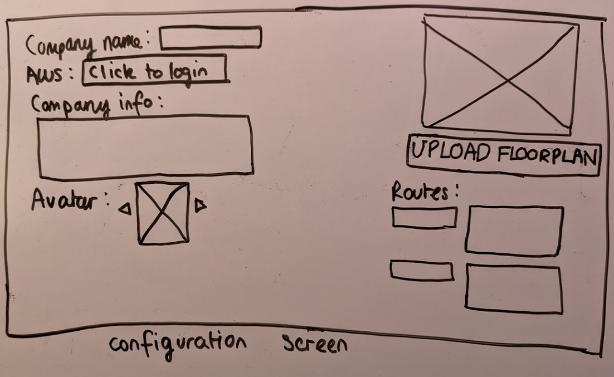

Tingmao Wang

For this project, we worked with NTTDATA to build an improved version of last year's team 24 project, a lab virtual assistant. Specifically, we build upon their code to make the assistant more engaging to interact with, more configurable, as well as improving existing installation process.
We also have a third year student—Brandon Tan—working on this project at the same time. Our team and the third year student focus on different tasks, and we will indicate requirements that are not ours with a light colour.

The virtual assistant project is about building a digital avatar that is to be displayed on a lab TV/screen. Visitors and employees in the lab can interact with the assistant via voice commands. The assistant should be able to give the user an introduction to the lab and the company, and be able to handle different queries about the lab or the company.
For example, if the company organizes a VR workshop in the lab, after being led to the lab by reception, visitors should be able to ask the assistant about what happens next, where to go, etc. and possibly also have the assistant help demostrate some of the VR features in the lab.
The goal of our project is to improve the existing solution and make the assistant more professional, engaging and be able to perform more tasks.
In our first meeting with the client, we asked about the requirements and were given some ideas of what we could achieve throughout this project. In the following meetings, we clarified and agreed on the requirements. The client occasionally added requirements throughout the project timeline.

Peter Jensen is a technology enthusiast who is attending a workshop at NTTDATA. He uses the assistant to find out what room his workshop is in and receive directions to get there. He is happy he is able to talk with the assistant naturally.
Joseph Richardson is an employee who manages the assistant. He is not familiar with complex programming so he wants a system that is easy to set up, configure and maintain. He found the lab assistant's set up to be very straightforward.

Currently the avatar shows an empty background. We plan to implement a feature to match the background to the current weather.
Visitors to the lab should be able to ask the assistant where to go for a certain place or event, and the assistant should be able to show a map, along with voice directions.
Currently, setting up the assistant involves the deployment of multiple moving pieces (see # System Design). Ideally this should be improved to a one-click install and run.
Currently the assistant only has one 3D form. We aim to be able to support using multiple models, so that the company or the user can select the 3D avatar they like the most.
Currently the assistant only supports landscape mode. The assistant must be able to adjust accordingly to both landscape and portrait monitors/TV screens.
The client suggested a monitoring interface to show usage of the assistant.
This would involve making the assistant able to control building lights, etc.
One of Brandon's major requirement, to make the mouth show the correct shape when Alexa is speaking.
Also one of Brandon's area, to make the avatar able to convey appropiate emotions to the user via facial features.
This could involve the use of some loading animation
After gathering our requirements, we created hand-drawn sketches to explore the ways we could design the interface to integrate the design principles (visibility, feedback, affordance, consistency, constraints). Originally, we had 2 sets of sketches. After some user feedback, we decided to use these as our final sketches.


Using Balsamiq Cloud, we created an interactive prototype to show our design ideas and the interaction between the assistant and the user, here is the video. The speech bubbles represent voice commands from the user.
We used an analytic evaluation by evaluating our prototype through heuristics.
| Location | Heuristic | Problem | Solution | Severity |
|---|---|---|---|---|
| Configuration page ​ | Help and documentation | There is no guidance on how to setup the configuration page. | Create a help popup in the configuration page | 3 |
| Location | Visibility of system status | Once a voice command is inputted, there is no indication if the system is taking a while to respond or if it has crashed. | Have an animated thought bubble above avatar to represent that system is processing. | 2 |
| Location | Recognition rather than recall | User may forget how to activate or ask for some specific things from the assistant. | Display suggested questions if a user is detected but there is no input. | 2 |
Preece, J., Sharp, H., & Rogers, Y. (2019). Interaction design: beyond human-computer interaction, Wiley, 5th Edition Section 1.7.3